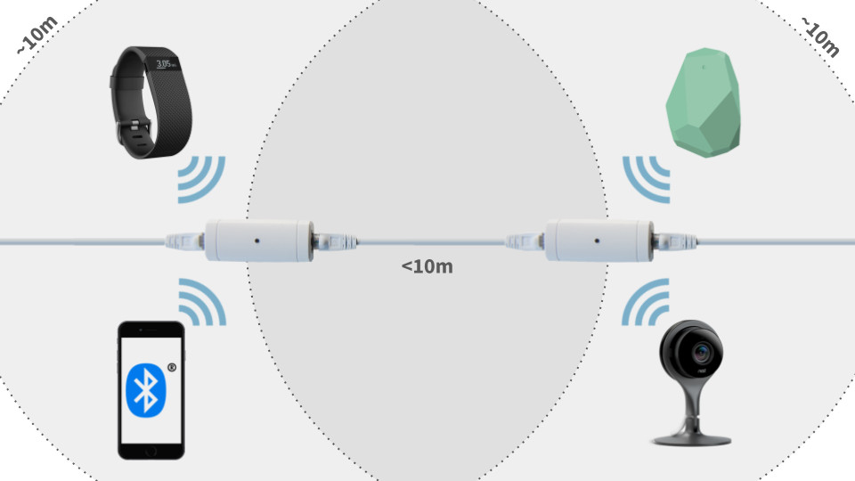
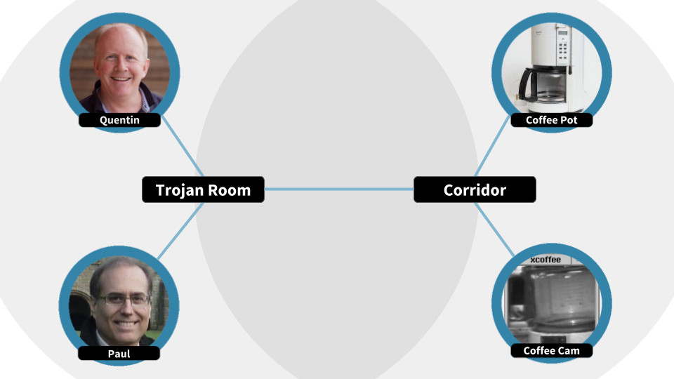
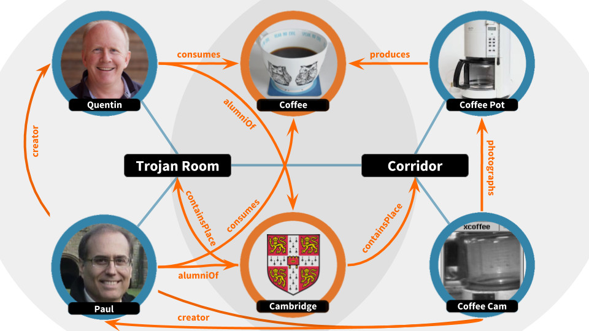

Context
Real-time, real-world, hyperlocal.
Hyperlocal context
Our vision is ubiquitous machine-contextual-awareness at the service of humanity. Sounds ambitious? It is! From a technical standpoint, however, we believe the underlying framework is in place and consists of the following three layers:
- real-time location on a human scale
- the web of things (and people!)
- the semantic web
If a tiny team at the University of Cambridge was able to connect a coffee pot to the Internet in 1991, and soon thereafter leverage the standards of the nascent World Wide Web for anyone anywhere to view in their browser, surely our ambition is justifiable!
Human-scale real-time location
If machines are to better serve humans through contextual awareness, they must understand that we move around plenty and interact with the objects around us (case in point: coffee pots). Fortunately, real-time location systems (RTLS) have been designed for this purpose. While these tend to focus on tracking a few things with precise location, we require instead the ability to track anything with "good enough" location.
The illustration below shows four common products detected by two sensors listening for their Bluetooth Low Energy (BLE) advertising packets.
Here, machines understand that two BLE devices (wearable and smartphone) are currently closest to the sensor on the left, and two others (beacon and webcam) are currently closest to the sensor on the right. Moreover, given that the range of the radios effectively limits them to a human scale, machines can infer with "good enough" chances that all four devices are relatively close to one another.
As there are now billions of BLE devices across the planet, and an order of magnitude more RFID tags with similar range, the ability to identify and locate almost anything on a human scale becomes plausible, if not likely.
Association with the Web of Things
If machines are to better serve humans through contextual awareness, they must be able to represent people, products and places in a way they can understand. Fortunately, the Web of Things (WoT) has been designed for this purpose, using existing Web standards to provide the ability for real-world objects to exist on the Web.
Paying homage to the Trojan Room Coffee Pot, the illustration below shows how the wearable has been associated with Quentin, the smartphone with Paul, the beacon with the coffee pot and the webcam with its latest image capture. The sensors too have been associated with real-world places, namely the Trojan Room and the adjoining corridor.
Here, machines understand that Quentin and Paul are currently in the Trojan Room and the coffee pot and coffee cam and are in the nearby corridor. Such understanding was achieved by associating the data advertised by each device (ex: Paul's smartphone) with the corresponding URL of their existing profile on the Web. This association can be made using a variety of mechanisms:
- inclusion of the URL in the advertising packet (ex: Eddystone)
- lookup via an implicit identifier association (ex: Sniffypedia)
- lookup via an explicit identifier association
We maintain an open source library for the decoding of advertising packets called advlib (presented at IEEE WF-IoT 2015), and an open source associations index and profile database called Sniffypedia. Together, these already provide the ability for machines to identify and associate most BLE devices with an existing profile on the Web.
Adoption of The Semantic Web
If machines are to better serve humans through contextual awareness, they must be able to represent the relationships among people, products and places in a way they can understand. Fortunately, the Semantic Web has been proposed for this purpose, and the recent adoption of enabling standards such as JSON-LD and Schema.org by the major search engines is an encouraging step towards the ability for machines to understand the relationships among both real-world entities and abstract concepts.
Building on our example, the illustration below shows how relationships among the actors are encoded, and the concept of both coffee and the University of Cambridge introduced.
Here, machines understand that Quentin and Paul, both coffee drinkers and Cambridge alumni, happen to be, right now, together in the Trojan Room adjacent to the corridor with the coffee contraption they created a quarter-century ago. Could those same machines understand the level of coffee and estimate demand based on the profiles of the current occupants? Yes! Have we reached the promised land of programmatic coffee? Perhaps! As long one can automate the replenishment of water, filter and grounds...
Hyperlocal context at your service
Our technology incorporates these three layers, leveraging the Web and open standards whenever possible, in order to serve what we call hyperlocal context. The machine-contextual-awareness afforded by this service can be used to simply observe and measure real-world behaviour, and, in keeping with our vision, to enable next-generation programmatic interactions for the benefit of humanity.